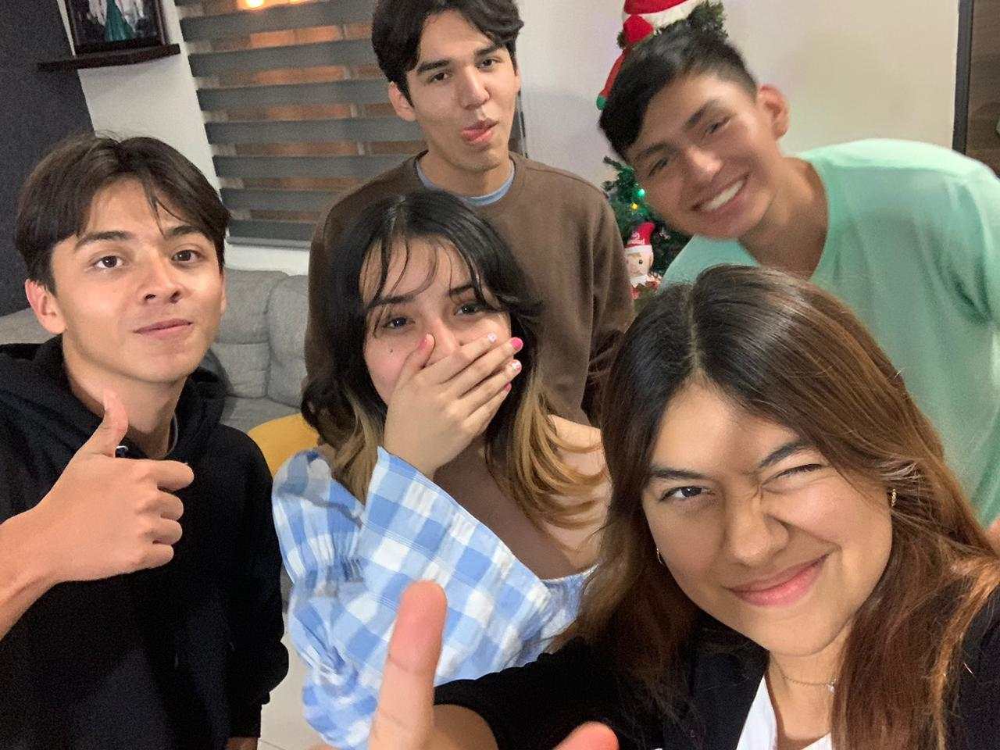
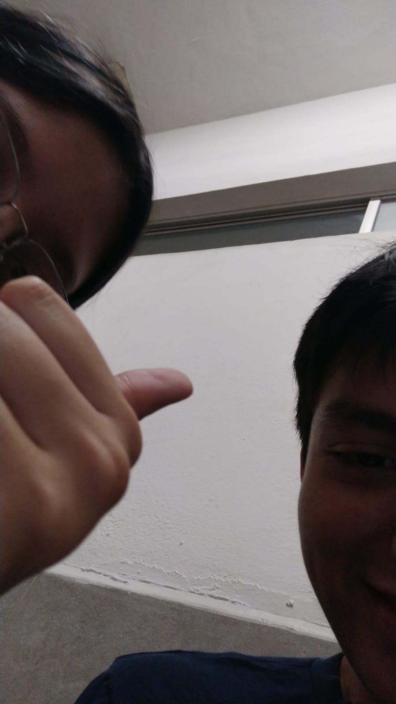
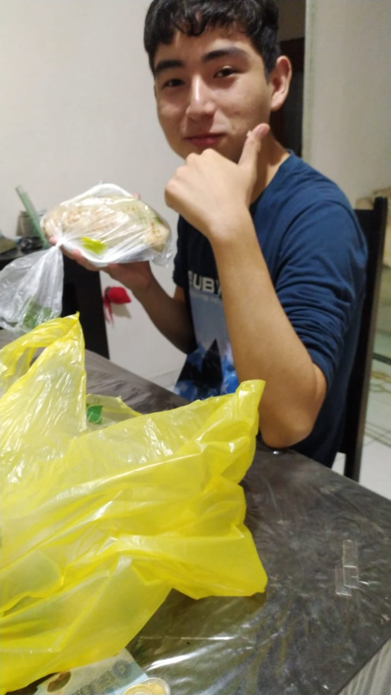
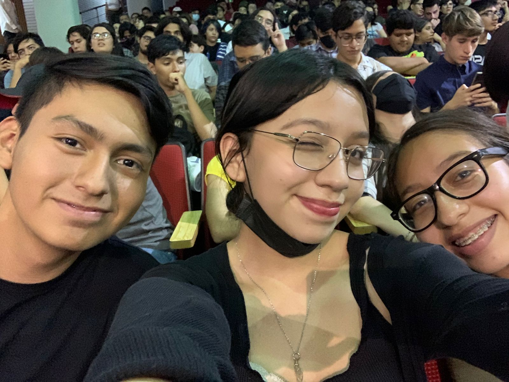
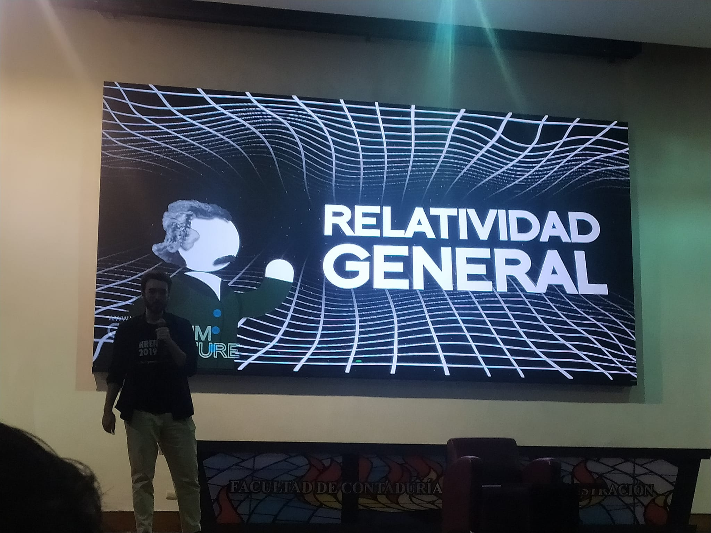
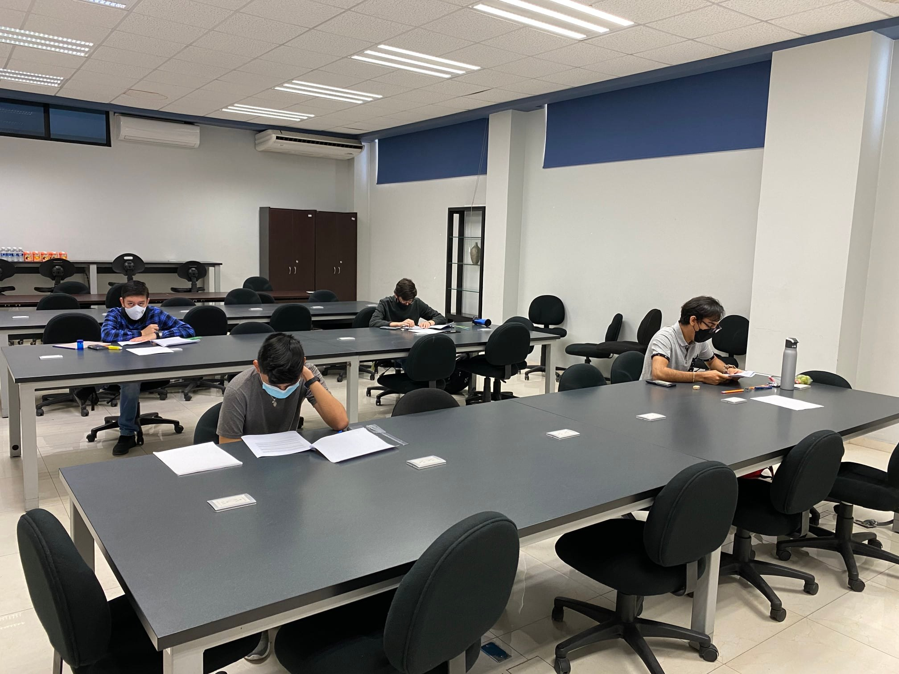
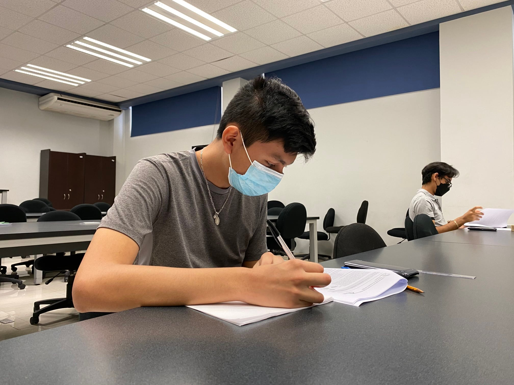
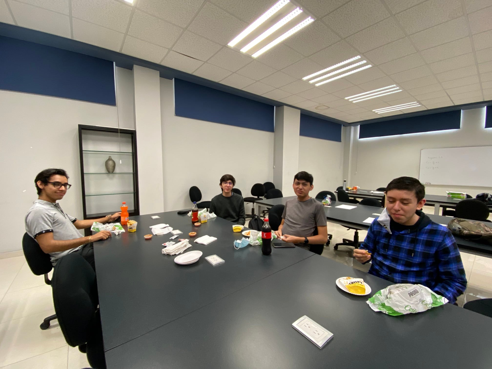
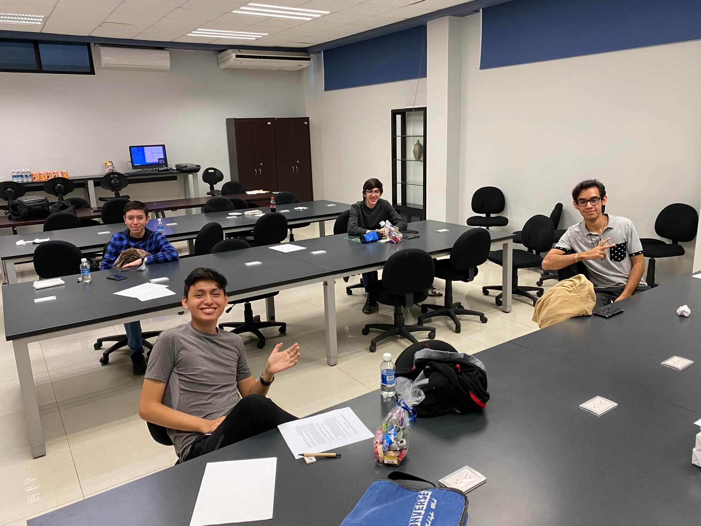

Mis Pasatiempos
Uno de mis pasatiempos favoritos es salir con mis amigos, gracias a esto he creado muchos recuerdos, tanto tristes como felices, aunque en su mayoría son felices.
- 
- 
- 
- 
-

Otro de mis grandes pasatiempos es la física, ya que desde que la empecé a estudiar mas seriamente en la secundaria me encantó y me ha traído muchos recuerdos bonitos como los siguentes:





Tambien tengo una gran pasión por ver pelicuas, mis favoritas son las siguientes:
- Oppenheimer
- En busca de la felicididad
- Coraline
- El extraño mundo de Jack
- El cadaver de la novia